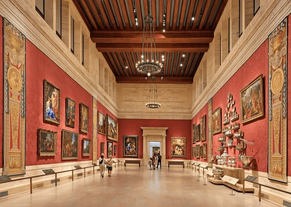

Explore

MonoMuse is a contemporary museum dedicated to exploring the intersection of art, technology, and human creativity. Our mission is to inspire visitors to engage with innovative digital art, immersive exhibitions, and interactive installations that demonstrate how technology is shaping modern culture.
The museum serves a diverse audience including students, artists, researchers, families, and visitors from around the world. By creating accessible and engaging exhibitions, MonoMuse aims to foster curiosity and creativity in people of all backgrounds.
Founded in 2012, MonoMuse began as a small experimental gallery dedicated to digital media art. Over time, it has grown into a major cultural destination featuring international artists and cutting-edge creative technology.
Key milestones in the museum’s development include:
- 2012 – MonoMuse was founded as a museum focused on art and technology.
- 2015 – The museum launched its first interactive digital installation exhibit.
- 2018 – Educational programs were introduced for students and community groups.
- 2021 – International artists began showcasing work at MonoMuse.
- 2024 – The museum expanded its interactive labs and creative workshops.